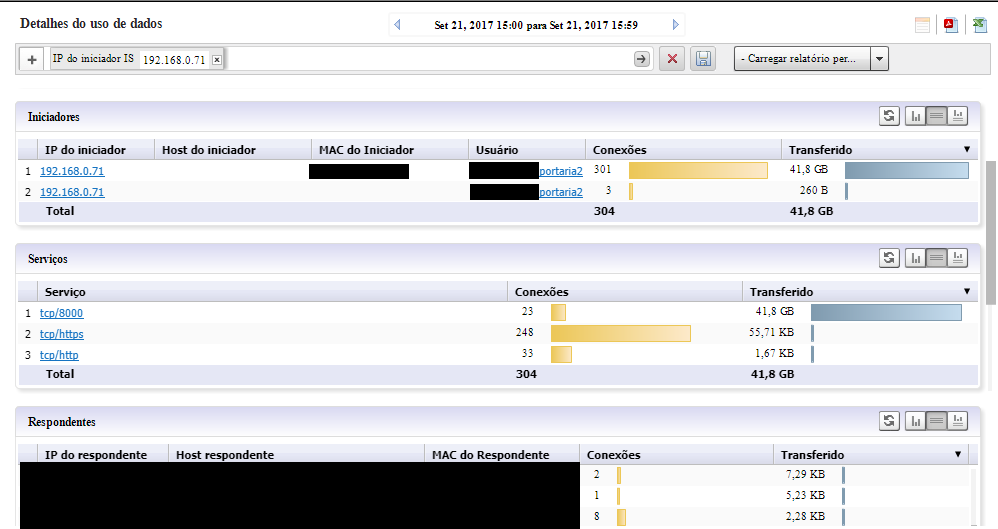
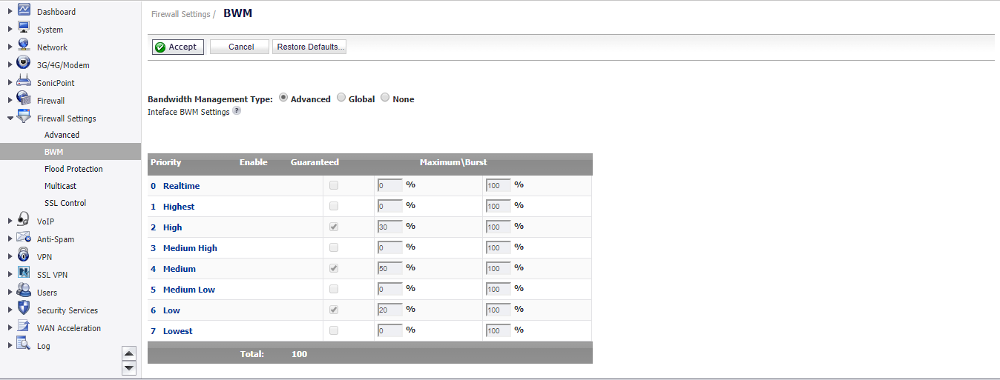
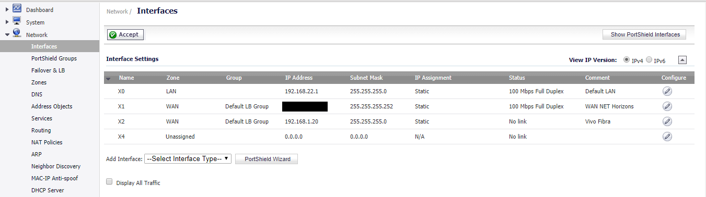
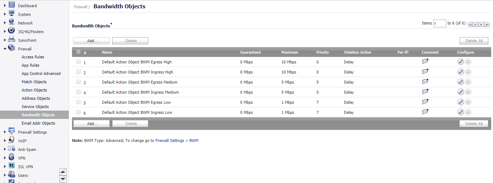
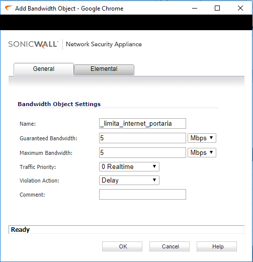
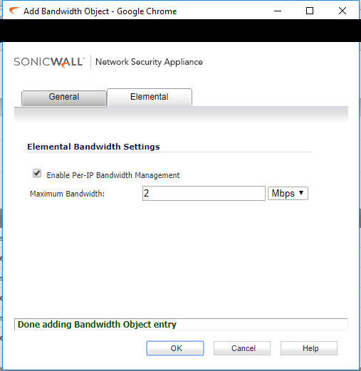
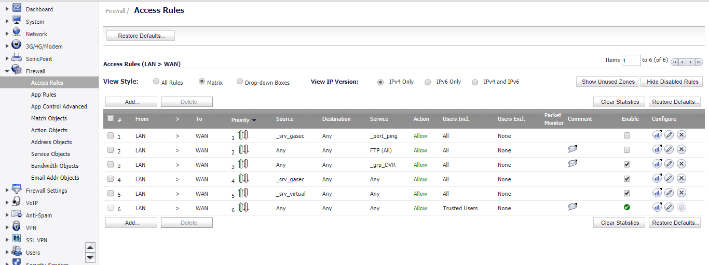
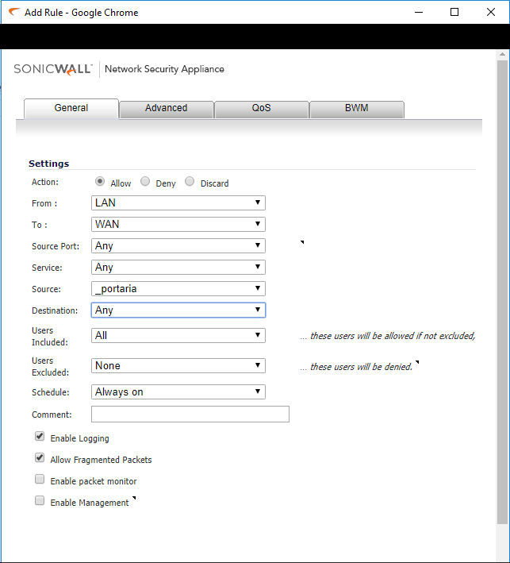
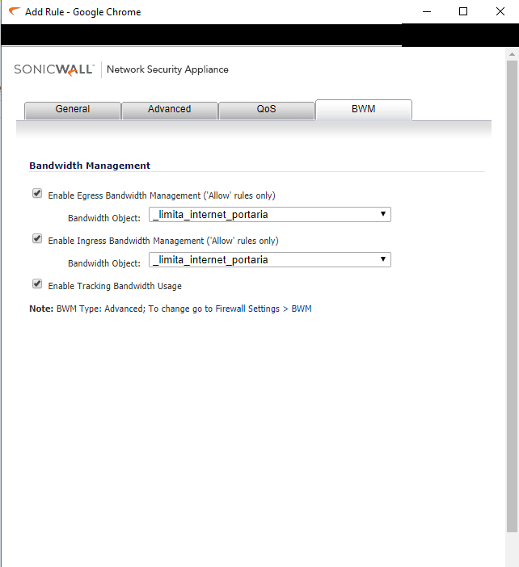
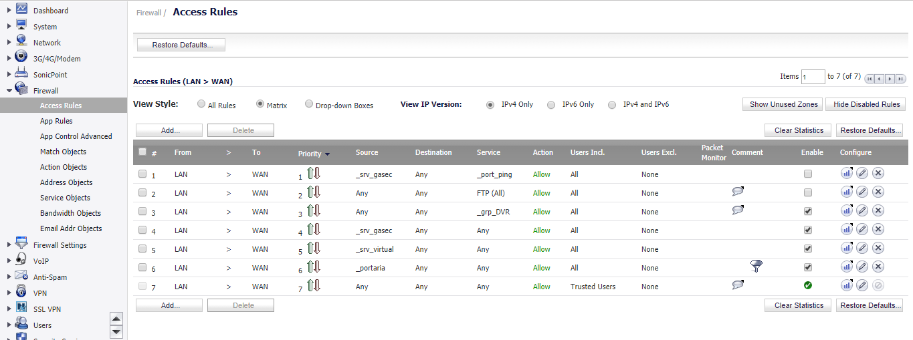

Limitar banda de internet no SonicWall
Passo à passo de como criar regras de BWM no Sonicwall, deixando a rede bem segmentada e com menos gargalo, evitando o consumo descessário da banda de internet.
Passo à passo de como criar regras de BWM no Sonicwall, deixando a rede bem segmentada e com menos gargalo, evitando o consumo descessário da banda de internet.
Algumas semanas à traz estava com um pequeno problema que de alguma maneira, a minha internet estava horrivelmente lenta, e eu não conseguia encontrar onde estava o problema, no monitoramento do meu link estava sempre consumindo quase que 100% da banda.
Então dando uma fuçada no SonicWall Analyzer, consegui identificar o foco do problema, que era uma máquina que ficava na portaria cujo seu foco era somente controlar o DVR, porém ela estava enviando diariamente mais de 60GB, como é possível ver na figura à baixo

Essa máquina estava enviando tudo isso, porque em outro site, se faz a necessidade de monitorar as câmeras, da matriz, então eu não poderia simplesmente desligar à máquina, logo a solução mais simples foi reduzir o consumo de banda só dessa máquina.
Bom para começar fiz esse procedimento em um TZ105, que eu acredito que não tenha muita diferença dos outros, primeiro será necessário ativar o BWM (Bandwidth Management), para isso você tem que ir em Firewall Settings > BWM e marcar a opção Advanced e depois Accept , como na imagem à baixo.

Após ativar o modo Advanced do BWM, precisamos definir a largura de banda direto na interface, para isso você deve ir em Network > Interfaces, como mostra a imagem à baixo:

Clique em Editar, na interface de WAN da sua rede, caso você tenha mais de um LINK recomendo que faça nos dois, caso aconteça um Failover e o outro LINK assuma, já como a janela de edição do LINK aberta, vá até a aba Advanced marque Enable Interface Egress Bandwith Limitatios & Enable Interface Ingress Bandwitdh Limitarion e determine qual será o uso da Interface.

Com o BWM ativado e a interface WAN configurada, vamos criar um Objeto, que determine a quantidade que nossa máquina alvo vai poder usar, para isso vá em Firewall > Bandwitdh Objects.

Clique em adicionar, e defina de acordo com a maneira que você deseja limitar à banda.


Após criar o Objeto determinando a quantidade de banda que à máquina vai usar, será necessário criar a regra, apontando justamente para os processos que fizemos á cima, para isso vá em Firewall > Access Rules, e clique em LAN to WAN.


Agora vamos criar a nossa regra, então portas de destino são todas, serviços são todos, a origem é o objeto com o IP/MAC da portaria, os destinos são todos, com isso parte da nossa regra está criada.

Agora vá na aba BWM, marque as duas opções e selecione em ambas o objeto que criamos, onde determinamos qual será o tamanho da banda que a máquina vai utilizar.

E abaixo é possível ver como a regra fica.

Criando regras assim bem segmentadas, conseguimos deixar a nossa rede com menos gargalo e consumo, principalmente onde a origem não tem a necessidade de uma banda maior que o necessário.
Comentários para: "Limitar banda de internet no SonicWall"